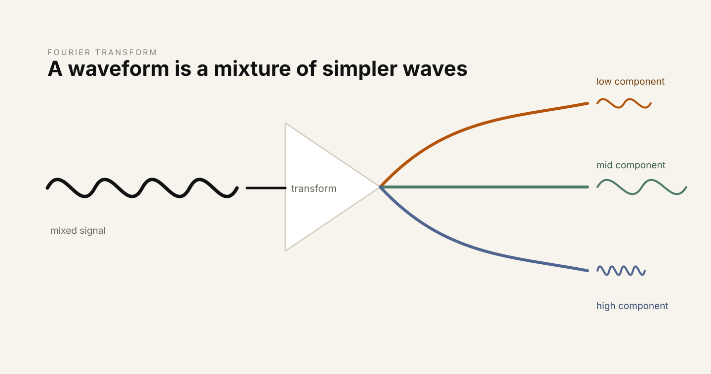
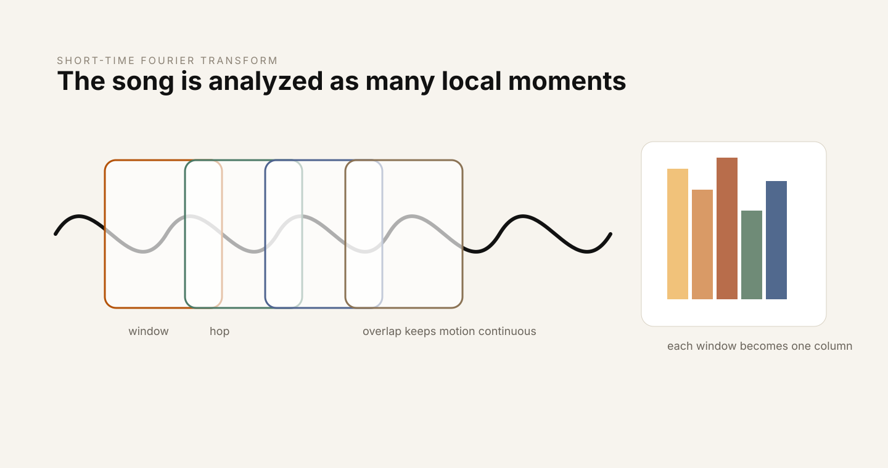
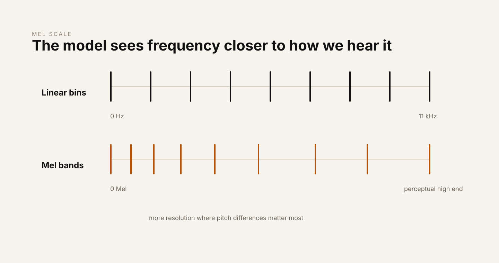
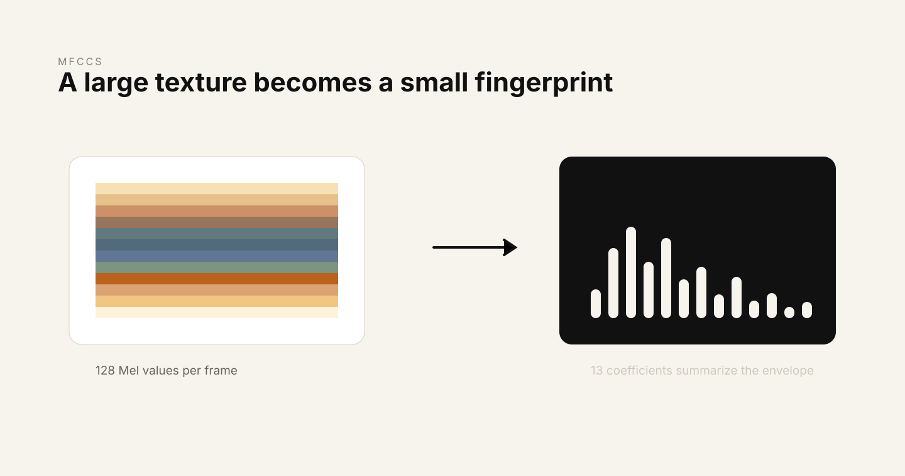
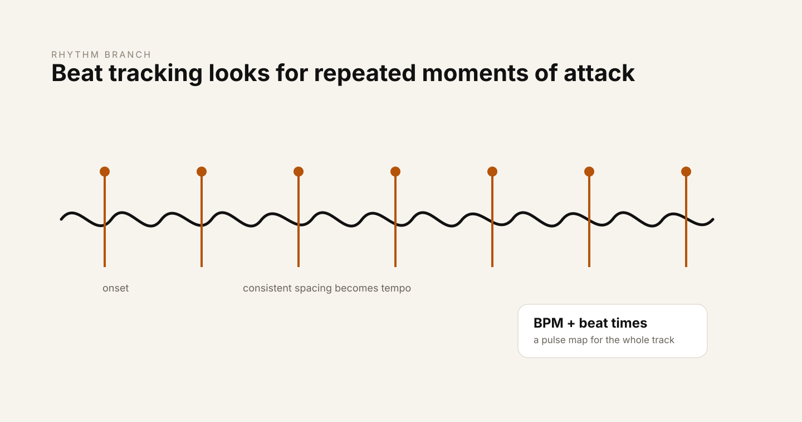
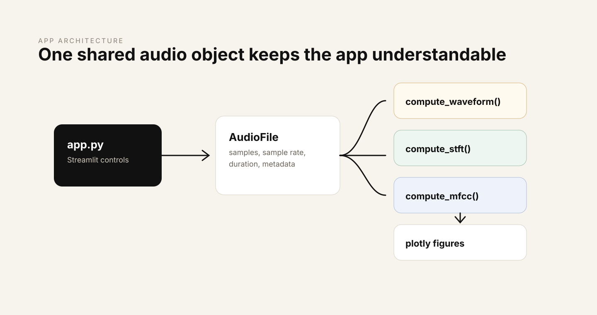

The first time I tried to understand audio AI seriously, I kept running into the same problem: the exciting part was always the model, but the thing that actually touched the sound first was hidden in a footnote. Whisper uses log-Mel spectrograms. Music models often begin from encoded time-frequency representations. Recommendation systems extract descriptors before they compare, cluster, or rank anything. Everyone talked about intelligence, but the front door to that intelligence was signal processing.
So I built Audio Explorer as a way to slow the whole thing down. The goal was not to make another black-box analyzer. I wanted a small local app where I could drop in an audio file and watch it become the kinds of representations that modern audio systems actually use: a waveform, a spectrogram, a Mel spectrogram, MFCCs, and a rhythm map.
This article is the journey behind that build. It is also the guide I wish I had when I started: less "here is a formula, good luck" and more "here is why this step exists, what it throws away, what it preserves, and why a model might care."
The question that started it
Audio feels continuous. You press play and sound simply happens. A voice arrives as a living thing. A drum hit has weight. A note has texture. But a computer never receives "texture" or "groove" or "voice." It receives numbers.
That gap is the whole story. Audio AI is not magic layered on top of music. It is a long chain of careful translations. First, a compressed file becomes samples. Then samples become frequency information. Then frequency information is arranged across time. Then that image-like surface is warped to match human hearing. Then it may be compressed into coefficients, or fed into a neural network, or used to detect tempo and beats.
Once I saw that, the build became clearer. Audio Explorer needed to make each translation visible.

What Audio Explorer does
Audio Explorer is a local Streamlit app for WAV, MP3, and FLAC files. You upload a file, and the app builds six inspectable views of the same signal. I made the views interactive with Plotly because static plots are fine for reports, but learning signal processing becomes much more alive when you can zoom into one transient, hover over one frequency bin, and connect the math to something you can see.
- Waveform: the raw amplitude of the signal over time. This answers the simplest question: when is the audio loud, quiet, clipped, or silent?
- Signal statistics: RMS loudness, peak amplitude, clipping detection, DC offset, sample count, duration, and dynamic range. These are boring in the best way: they catch problems early.
- Spectrogram: a time-frequency map created with the short-time Fourier transform. This shows what frequencies are active at each moment.
- Mel spectrogram: a perceptually warped spectrogram that spends more representational detail where human hearing is more sensitive.
- MFCCs and deltas: a compressed summary of spectral shape and how that shape changes over time.
- Beat tracking: tempo estimation, beat timestamps, waveform overlays, and beat-interval consistency.
The app is not trying to hide the machinery. It is trying to make the machinery calm enough to inspect.
Stage 1: the file is not the sound
The most important conceptual reset is this: an MP3 is not the signal. It is a compressed container that must be decoded before most analysis can happen. The thing we analyze is a one-dimensional array of samples, usually floating-point values between -1 and 1.
y, sr = librosa.load("song.mp3", sr=22050, mono=True)In that line, y is the waveform array and sr is the sample rate. If the sample rate is 22,050 Hz, the array stores 22,050 measurements for every second of sound. A three-and-a-half-minute track becomes roughly 4.6 million numbers.
That sounds like a lot, but it is also beautifully simple. Every later representation in the app starts from that one array. The spectrogram is computed from it. The Mel spectrogram is computed from spectral energy derived from it. MFCCs are computed from the Mel spectrum. Beat tracking begins from it too, but follows a different branch.
I also made the loader collect metadata: file type, size, duration, number of samples, sample rate, channels, and bit depth where available. That metadata matters because audio problems often start before the exciting part. If a file is clipped, offset, strangely short, or unexpectedly resampled, you want to know before you build features on top of it.
Stage 2: the waveform is honest but limited
The waveform is the first thing people usually imagine when they think of audio visualization: a line moving above and below zero. It is honest because it shows the signal directly. Tall peaks mean large amplitude. Flat sections may indicate silence. Abrupt squared-off peaks may indicate clipping. A waveform that sits above or below zero may have DC offset.
time = np.arange(len(y)) / sr
peak = np.max(np.abs(y))
rms = np.sqrt(np.mean(y ** 2))
dc_offset = np.mean(y)But the waveform has a blind spot: it does not explain frequency content well. A flute and a violin playing the same pitch can have waveforms that look confusingly similar at a glance. A cymbal crash, a consonant, and a noisy synth texture can all look like bursts of activity. The waveform says "something happened here." It does not clearly say what kind of sound happened.
That is why the next step exists.
Stage 3: Fourier is the moment the signal opens up
The Fourier transform is one of those ideas that feels more dramatic the longer you sit with it. It says that a complicated signal can be understood as a combination of simple waves. Not metaphorically. Mathematically.

If the waveform is the surface of the sound, the Fourier transform shows the ingredients. A bass note has energy at a fundamental frequency and its harmonics. A vocal vowel has a particular spectral envelope shaped by the vocal tract. A hi-hat has wide high-frequency energy. These differences can be hard to read in the time domain, but they become visible in the frequency domain.
The discrete Fourier transform tests the signal against many candidate frequencies. If the signal contains a candidate frequency, the comparison accumulates strongly. If it does not, the positive and negative parts mostly cancel. The result is a spectrum: frequency on one axis, magnitude on the other.
X = np.fft.rfft(y)
magnitude = np.abs(X)The catch is that a single Fourier transform over a whole track gives one global answer. It can tell you what frequencies appear somewhere in the song, but not when they appear. Music and speech are not static. A snare hit lasts a moment. A vowel changes. A melody moves. A single spectrum averages all of that into one summary.
That limitation leads directly to the spectrogram.
Stage 4: the spectrogram adds time back in
The short-time Fourier transform, or STFT, is a practical compromise. Instead of taking one Fourier transform across the entire signal, it slices the waveform into overlapping windows and computes a Fourier transform for each slice. Then it stacks those spectra side by side.

S = librosa.stft(y, n_fft=2048, hop_length=512)
S_db = librosa.amplitude_to_db(np.abs(S), ref=np.max)With a 2,048-sample FFT at 22,050 Hz, each analysis window covers about 93 milliseconds. With a 512-sample hop, the window advances about every 23 milliseconds. The resulting matrix has frequency bins as rows and time frames as columns. The value inside each cell is the amount of energy at that frequency during that time frame.
This is where audio starts to become visually legible. Harmonics appear as horizontal bands. Percussive hits appear as vertical bursts. Silence becomes empty space. A rising pitch becomes a rising line. The spectrogram is not just a plot; it is the first representation in the pipeline that begins to look like a machine-readable picture of sound.
There is a tradeoff hiding inside the parameters. Larger windows give better frequency resolution, because they observe more cycles of low frequencies. But they blur fast events in time. Smaller windows react quickly, but they make frequency estimates less precise. This is why feature extraction is not mechanical. Even before the model, we are making choices about what kind of detail matters.
Stage 5: the Mel scale makes the representation more human
A normal spectrogram uses a linear frequency axis. Every hertz gets equal spacing. Human hearing is not arranged like that. We are much more sensitive to small differences in low frequencies than equal-sized differences in high frequencies. The difference between 100 Hz and 200 Hz is enormous perceptually. The difference between 8,000 Hz and 8,100 Hz is not.

The Mel scale bends frequency into a more perceptual shape:
mel = 2595 * np.log10(1 + frequency_hz / 700)Audio Explorer applies a bank of 128 triangular Mel filters to the power spectrum. Each filter gathers energy from a region of the frequency axis. Low-frequency filters are packed more tightly. High-frequency filters are spread farther apart. The result is smaller than the linear spectrogram, but often more useful for tasks that care about what humans hear.
mel_power = librosa.feature.melspectrogram(
y=y,
sr=sr,
n_fft=2048,
hop_length=512,
n_mels=128
)
mel_db = librosa.power_to_db(mel_power, ref=np.max)This is the point where the pipeline starts to look very familiar if you read audio AI papers. Many systems do not begin from raw waveform samples. They begin from Mel spectrograms or closely related representations because the Mel view is compact, stable, and aligned with perception. It removes detail the model probably does not need and emphasizes structure that often matters.
That realization changed how I thought about preprocessing. It is not a boring setup step. It is already a theory of the signal.
Stage 6: MFCCs turn texture into a fingerprint
Mel-frequency cepstral coefficients, or MFCCs, compress the Mel spectrogram even further. They start with the log-Mel spectrum, apply a discrete cosine transform, and keep only a small number of coefficients. Audio Explorer keeps 13, which is a classic choice.

mfcc = librosa.feature.mfcc(y=y, sr=sr, n_mfcc=13)
delta_mfcc = librosa.feature.delta(mfcc)The useful phrase here is spectral envelope. Imagine ignoring the tiny wiggles in a spectrum and looking instead at its broad shape. That shape carries information about timbre and, in speech, about the resonances created by the vocal tract. The first coefficient often tracks overall energy. The later coefficients describe progressively finer shape details.
MFCCs were central to speech recognition for decades because they are a clever compression. They do not try to preserve every detail. They preserve a carefully chosen summary. That makes them less flashy than modern deep learning features, but still deeply educational. They show how much intelligence can begin with the right representation.
The delta MFCCs add motion. Instead of only asking "what is the spectral shape at this frame?", they ask "how is that shape changing?" For speech, music, and rhythm-heavy sounds, change over time is often as important as the snapshot itself.
Stage 7: rhythm follows a different branch
Rhythm is not just another frequency representation. Beat tracking begins by looking for onsets: moments where spectral energy rises sharply. Drum hits, plucked notes, and strong attacks tend to create these spikes.

tempo, beat_frames = librosa.beat.beat_track(y=y, sr=sr)
beat_times = librosa.frames_to_time(beat_frames, sr=sr)From the onset envelope, the app estimates tempo and places beat markers. Then it overlays those beats on the waveform and plots beat intervals. The interval view is small but revealing. Electronic music with a tight grid often produces extremely consistent spacing. Live performance can breathe. Some tracks drift. Some sections change tempo. The beat plot makes those differences visible.
I liked this part because it reminded me that audio analysis is not only about pitch and timbre. Time has its own structure. A song is not just frequencies stacked vertically; it is expectation, repetition, and pulse moving forward.
How I structured the project
I kept the architecture intentionally plain. The point was to learn the pipeline, not bury it in framework cleverness. There is one Streamlit entry point, one loader, and separate visualization modules for waveform, spectrogram, Mel spectrogram, MFCCs, rhythm, and audio physics helpers.

Each module follows the same basic pattern: compute first, render second. The compute functions return arrays and metadata. The plot functions turn those outputs into Plotly figures. This separation matters because it keeps the math reusable. If I later want to feed the same features into a classifier, notebook, or training pipeline, I do not have to extract them from UI code.
features = compute_mel_spectrogram(audio)
figure = plot_mel_spectrogram(features)The other practical design choice was downsampling for display. Audio arrays and spectrogram matrices can be large. Rendering every sample in the browser is not always useful. The app can preserve the full-resolution analysis while showing a lighter interactive view, which keeps exploration smooth without changing the underlying computation.
What building it taught me
The main lesson is that representation is not a prelude to the model. Representation is part of the model's intelligence. Before any neural network sees the data, the pipeline has already decided what the data should look like. It has decided whether time resolution matters more than frequency resolution. It has decided whether human perception should shape the frequency axis. It has decided whether to keep fine detail or compress the broad envelope.
That is humbling, because it makes audio AI feel less like a single magical object and more like a lineage of good ideas. Fourier gives us frequency. The FFT makes it practical. The STFT gives frequency a timeline. The Mel scale brings in perception. MFCCs compress spectral shape. Beat tracking extracts pulse. Modern systems build on top of these ideas, but the foundation is older, sturdy, and still beautiful.
The second lesson is that interactivity changes understanding. Reading that a spectrogram shows energy over time is useful. Dragging across a spectrogram and seeing exactly where a cymbal throws energy into the high end is different. Hovering over a harmonic band and connecting it to the sound you hear is different. The app made the math less abstract because every formula had somewhere to appear.
The third lesson is more personal: building the pipeline made audio feel less intimidating. DSP can look like a wall of equations from the outside. But when you implement it stage by stage, it becomes a series of reasonable questions. What is the signal? What frequencies are inside it? When do they happen? Which of those frequencies matter to people? How can we summarize the shape? Where is the pulse?
Where this goes next
Audio Explorer is the foundation for the next layer of work: audio classification, representation learning, and generative audio architecture studies. A classifier can consume spectrograms. A contrastive system can compare learned audio embeddings. A generative model can be studied through the representations it encodes and reconstructs.
But I wanted to earn the right to move there. Before training a model, I wanted to understand what it would eat. This project is that first meal, laid out carefully.
Project: Source and setup instructions are available in the Audio Explorer repository. Clone it, install the requirements, and run streamlit run app.py.